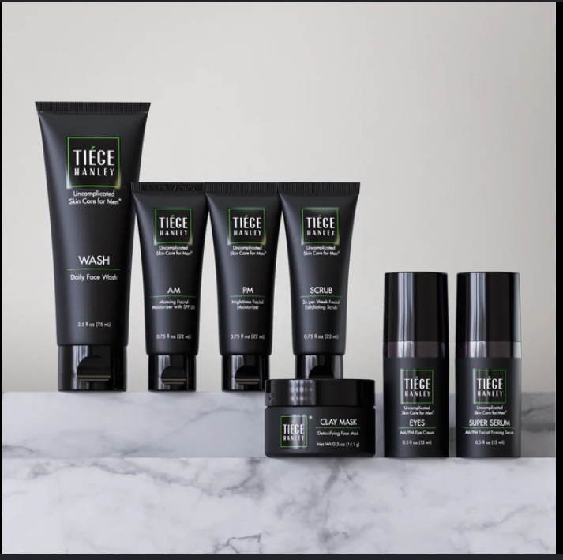

The Ultimate Guide to Mens SkinCare: Tips, Products, and Routines
Taking care of your skin is not vanity — it is basic hygiene and self-respect. The male skin is actually 25% thicker than female skin and produces more sebum (oil), making it more prone to clogged pores, acne, and shine. Yet most men skip skincare entirely or use a single bar of soap on their face, hair, and body — which strips the skin of its natural moisture barrier and causes long-term damage.
A simple and effective men's skincare routine does not need to be complicated. It starts with three non-negotiable steps: cleansing, moisturizing, and applying sunscreen. A gentle face wash removes dirt, oil, and pollution that accumulates throughout the day. A lightweight moisturizer keeps the skin hydrated and prevents premature aging, while a broad-spectrum SPF 30 or higher sunscreen protects against UV damage — the single biggest cause of wrinkles, dark spots, and skin cancer.
Beyond the basics, men can benefit greatly from adding a weekly exfoliant to remove dead skin cells and prevent ingrown hairs, especially after shaving. Ingredients like niacinamide help control oil and reduce pores, while hyaluronic acid locks in hydration without feeling greasy. The shaving process itself, if done incorrectly, causes significant irritation — using a sharp razor, shaving foam, and an alcohol-free aftershave balm makes a dramatic difference.
Consistency is everything in skincare. Results do not appear overnight, but two to four weeks of a simple daily routine will visibly improve skin texture, reduce breakouts, and give the skin a healthier, cleaner appearance. Your face is the first thing the world sees — treat it accordingly.
Conclusion :-
In conclusion, a dedicated skincare routine is essential for men to maintain healthy, youthful skin. By following a simple regimen of cleansing, moisturizing, and sun protection
Remember, taking care of your skin is not just about looking good — it’s about feeling confident and comfortable in your own skin. Start with the basics, be consistent, and you will see the benefits over time. Your skin will thank you for it.
